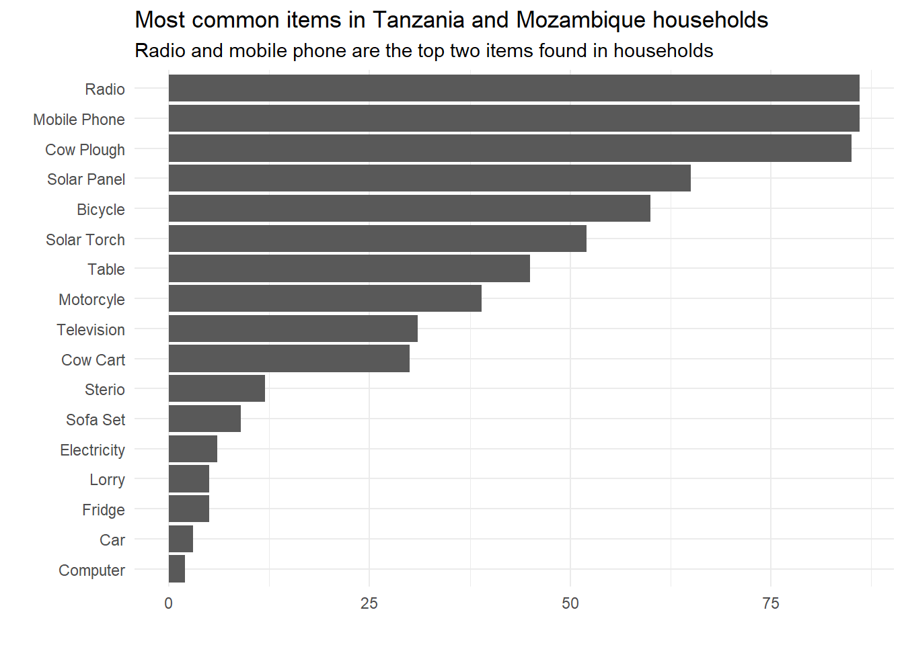
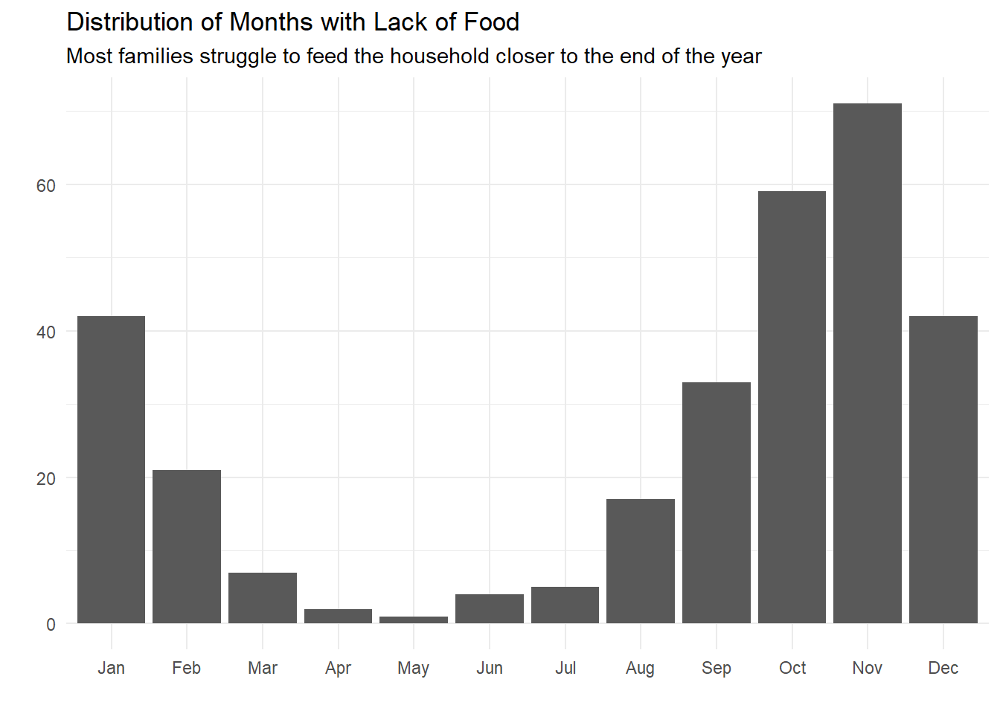

safi_data <- readr::read_csv('https://raw.githubusercontent.com/rfordatascience/tidytuesday/master/data/2023/2023-06-13/safi_data.csv')
library(tidyverse)
library(skimr)skim(safi_data)| Name | safi_data |
| Number of rows | 131 |
| Number of columns | 14 |
| _______________________ | |
| Column type frequency: | |
| character | 7 |
| numeric | 6 |
| POSIXct | 1 |
| ________________________ | |
| Group variables | None |
Variable type: character
| skim_variable | n_missing | complete_rate | min | max | empty | n_unique | whitespace |
|---|---|---|---|---|---|---|---|
| village | 0 | 1 | 3 | 8 | 0 | 3 | 0 |
| respondent_wall_type | 0 | 1 | 6 | 11 | 0 | 4 | 0 |
| memb_assoc | 0 | 1 | 2 | 4 | 0 | 3 | 0 |
| affect_conflicts | 0 | 1 | 4 | 10 | 0 | 5 | 0 |
| items_owned | 0 | 1 | 4 | 136 | 0 | 96 | 0 |
| months_lack_food | 0 | 1 | 3 | 46 | 0 | 31 | 0 |
| instanceID | 0 | 1 | 41 | 41 | 0 | 131 | 0 |
Variable type: numeric
| skim_variable | n_missing | complete_rate | mean | sd | p0 | p25 | p50 | p75 | p100 | hist |
|---|---|---|---|---|---|---|---|---|---|---|
| key_ID | 0 | 1 | 85.47 | 63.15 | 1 | 32.5 | 66 | 138.0 | 202 | ▇▆▃▂▅ |
| no_membrs | 0 | 1 | 7.19 | 3.17 | 2 | 5.0 | 7 | 9.0 | 19 | ▆▇▅▁▁ |
| years_liv | 0 | 1 | 23.05 | 16.91 | 1 | 12.0 | 20 | 27.5 | 96 | ▇▅▂▁▁ |
| rooms | 0 | 1 | 1.74 | 1.09 | 1 | 1.0 | 1 | 2.0 | 8 | ▇▁▁▁▁ |
| liv_count | 0 | 1 | 2.37 | 1.08 | 1 | 1.0 | 2 | 3.0 | 5 | ▆▅▇▂▁ |
| no_meals | 0 | 1 | 2.60 | 0.49 | 2 | 2.0 | 3 | 3.0 | 3 | ▅▁▁▁▇ |
Variable type: POSIXct
| skim_variable | n_missing | complete_rate | min | max | median | n_unique |
|---|---|---|---|---|---|---|
| interview_date | 0 | 1 | 2016-11-16 | 2017-06-04 | 2016-11-21 | 19 |
# Convert character NULL's into NA
safi_data$affect_conflicts <- replace(
safi_data$affect_conflicts,
safi_data$affect_conflicts == "NULL", NA)
safi_data <- safi_data %>%
# Remove instanceID column
select(-instanceID) %>%
mutate(
# Factorize village column
village = factor(village),
# Factorize respondent_wall_type column
respondent_wall_type = factor(respondent_wall_type),
# Convert memb_assoc to logical values
memb_assoc = case_when(
memb_assoc == "yes" ~ TRUE,
memb_assoc == "no" ~ FALSE,
TRUE ~ NA
),
# Factorize affect_conflicts column
affect_conflicts = factor(affect_conflicts)
)
head(safi_data)# A tibble: 6 × 13
key_ID village interview_date no_membrs years_liv respondent_wall_type
<dbl> <fct> <dttm> <dbl> <dbl> <fct>
1 1 God 2016-11-17 00:00:00 3 4 muddaub
2 1 God 2016-11-17 00:00:00 7 9 muddaub
3 3 God 2016-11-17 00:00:00 10 15 burntbricks
4 4 God 2016-11-17 00:00:00 7 6 burntbricks
5 5 God 2016-11-17 00:00:00 7 40 burntbricks
6 6 God 2016-11-17 00:00:00 3 3 muddaub
# ℹ 7 more variables: rooms <dbl>, memb_assoc <lgl>, affect_conflicts <fct>,
# liv_count <dbl>, items_owned <chr>, no_meals <dbl>, months_lack_food <chr>items_df <- safi_data %>%
select(key_ID, items_owned) %>%
mutate(
items_owned = gsub("_", " ", items_owned)
) %>%
separate_rows(items_owned, sep = ";") %>%
unnest(items_owned)
items_df$items_owned <- replace(
items_df$items_owned,
items_df$items_owned == "NULL", NA)
months_lack_food_df <- safi_data %>%
select(key_ID, months_lack_food) %>%
rename(month = months_lack_food) %>%
mutate(month = gsub(";", " ", month)) %>%
separate_rows(month, sep = " ") %>%
unnest(month)
months_lack_food_df$month <- replace(
months_lack_food_df$month,
months_lack_food_df$month == "none", NA)
months_lack_food_df$month <- str_sub(months_lack_food_df$month, start = 1, end = 3)
unique(months_lack_food_df$month) [1] "Jan" "Sep" "Oct" "Nov" "Dec" "Feb" "Mar" "Aug" "Jun" "Jul" "Apr" "May"
[13] NA months_lack_food_df$month = factor(months_lack_food_df$month, levels = month.abb)items_df %>%
drop_na() %>%
group_by(items_owned) %>%
count() %>%
mutate(items_owned = str_to_title(items_owned)) %>%
arrange(desc(n)) %>%
ggplot(mapping = aes(x = n, y = fct_reorder(items_owned, n))) +
geom_col() +
labs(
x = "",
y = "",
title = "Most common items in Tanzania and Mozambique households",
subtitle = "Radio and mobile phone are the top two items found in households"
) +
theme_minimal()
months_lack_food_df %>%
drop_na() %>%
group_by(month) %>%
count() %>%
ggplot(aes(x=month, y = n)) +
geom_col() +
labs(
y = "",
x = "",
title = "Distribution of Months with Lack of Food",
subtitle = "Most families struggle to feed the household closer to the end of the year"
) +
theme_minimal()